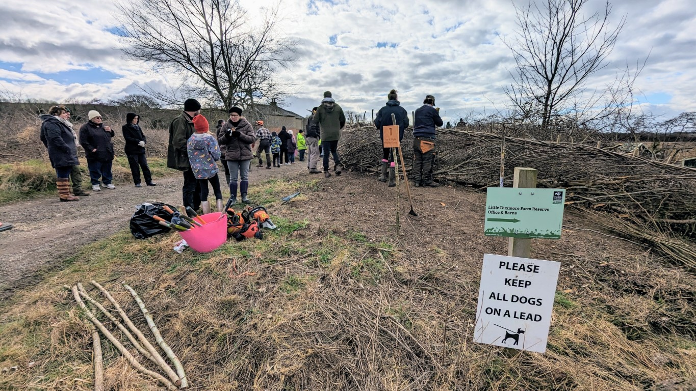

The 28th Annual Hedgelaying Competition was held on 25 February 2023 from 10am until 4pm at Little Duxmore Farm, Rowlands Lane, by kind permission of the Hampshire and Isle of Wight Wildlife Trust.
Lead sponsors in 2023: Landscape Therapy; Isle of Wight AONB; Pinkeye Graphics Ltd;
Supporters: W Hurst & Sons, Hants and IW Wildlife Trust, Mrs Mary Sitch

After a two-year break, the 2023 Isle of Wight Hedgelaying Competition returned in spectacular style on Saturday February 25th. With previous champion Phil Hart not in attendance, there was keen interest in the Open class where a new winner was guaranteed. Crowds of spectators gathered to enjoy the action throughout the day, anticipating a good standard of work in all three classes.
The venue was Little Duxmore Farm, on Rowlands Lane near Havenstreet, a farm recently purchased by hosts, the Hampshire and Isle of Wight Wildlife Trust. The farm was a new location for the competition and an unusual hedge that had pitches sloping in both directions. Twelve pitches were cut during the day, with 28 hedgelayers competing, including six teams making up the largest class.
The spectators not only enjoyed the competition but also other attractions such as the Vectis Searchers metal detecting exhibition, Ralph Griffin's display of billhooks and tools, and the popular running display of static engines and vehicles from Vectis Vintage Tractors and Engines Club. With favourable weather this year, instead of the customary tea tent the refreshments were served from the dry and spacious confines of a nearby barn.
The judges were former national hedgelaying champion Alan Ashby, of Tunbridge Wells, and the Island's AONB lead officer, Richard Grogan.
Four competitors entered the Open class: two mainland visitors and two Island regulars, Tom Murphy and Kingsley Hollis. Matthew Beard, from the South of England Hedge Laying Society, crossed the Solent to try his luck once more after achieving fourth place in 2020, and Graham West was a newcomer to the event.
When the Open class results were announced the mainlanders took the top two spots, with Sussex man Graham West winning the Denis Russell Cup and also the Peter Tunks £20 note award for the best stakes and binding, and Matthew Beard in second place. Third was Tom Murphy, leaving Kingsley Hollis in last place. Tom was also awarded the Landscape Therapy Best Isle of Wight Competitor award.
In the Novice class there were only two contenders, with reigning novice champion Tod Carder successfully defending his title, and securing himself a place in the Open competition next year.
The large team class, always popular with spectators, fielded six teams. Winners were the Hampshire and Isle of Wight Wildlife Trust Staff team, beating the Isle of Wight Young Farmers by a single point. The Young Farmers team comprised Tom Marsh, Emily Smith, William Earley and Sian Grove. They were allocated a particularly challenging sloping pitch, and with some newcomers to the craft in the team they did well to push the Hampshire and Isle of Wight Wildlife Trust Volunteers team into third place, although the volunteers did have the consolation of winning the W Hurst & Sons cup for the best hedge laid with hand tools.
Results
| Position | Class | Name | Score |
|---|---|---|---|
| 1 | Open | Graham West | 79 |
| 2 | Open | Matthew Beard | 74 |
| 3 | Open | Tom Murphy | 73 |
| 4 | Open | Kingsley Hollis | 72 |
| 1 | Novice | Tod Carder | 71 |
| 2 | Novice | Gwyn Alford | 69 |
| 1 | Team | HIWWT Staff | 70 |
| 2 | Team | Young Farmers: Tom Marsh; Emily Smith; William Earley and Sian Grove | 69 |
| 3 | Team | HIWWT Volunteers | 67 |
| 4 | Team | Badger Boys: Joe Rackstraw; Jim Warder; Jon Jewett; Liam Newton | 66 |
| 5 | Team | IW Coppice group: Richard Knowles; Rod Warne; Dave Hughes | 65 |
| 6 | Team | 'The Tree Fellers': Ed Daish-Miller; Jim Clinton; Tom Sargeant | 64 |
Winner of the W Hurst & Sons cup for the best hedge laid with hand tools:
HIWWT Volunteers
The Peter Tunks £20 note award:
An award was presented by judge Alan Ashby on the day in memory of former supreme national champion Peter Tunks, a regular judge and great supporter of the competition, who died in 2019. The award is a £20 note for the best stakes and binding. The winner was Graham West.
Landscape Therapy Best Isle of Wight Competitor award:
Tom Murphy